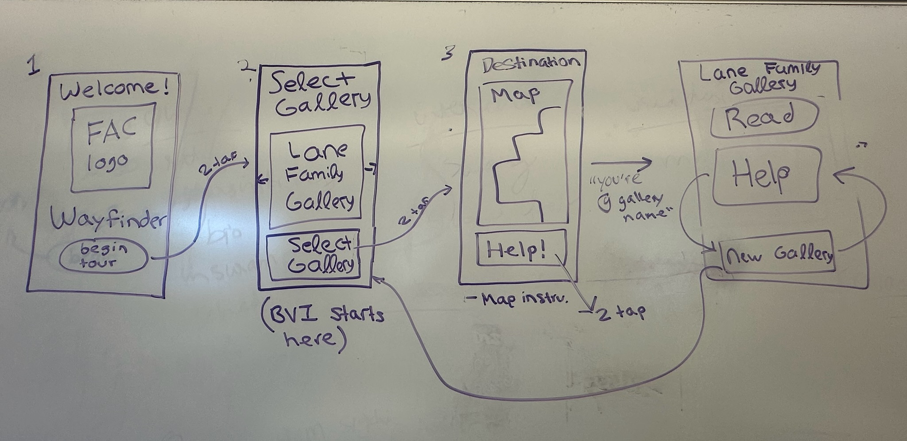

Team Pikachu Presents
Wayfinding Project for Blind and Visually Impaired People
Wayfinding Project for Blind and Visually Impaired People
Welcome to the Pikachu's wayfinding Project. We are developing an innovative navigation system to assist blind and visually impaired individuals in navigating public spaces. Our goal is to provide an intuitive, audio-based system that allows users to confidently and independently navigate their surroundings. The project is designed to enhance accessibility and independence for those with visual impairments by offering real-time guidance through voice commands and auditory cues. With this technology, users can hope to navigate complex environments, such as museum, shopping malls, or public transportation systems, safely and efficiently.
These were the drafts and foundation of our work:

Affinity Diagram
Convergent Sketch 1
Convergent Sketch 2
Storyboard
The Pikachu project is developed by 4 Colorado College students:
Senior at Colorado College majoring in Computer Science and History
Junior at Colorado College majoring in Computer Science major with Film Studies minor
Junior at Colorado College majoring in Computer Science and BESoc
Junior at Colorado College majoring in Computer Science with Art Studio minor
Our design process evolved from initial sketches to the final prototype:
Our navigation app provides audio-guided assistance for visually impaired users to navigate indoor spaces with confidence. When the app launches, a screen reader activates automatically and prompts the user to select a gallery. After a gallery is chosen, the app delivers clear, step-by-step audio directions to guide the user to their destination, while also alerting them to any obstacles along the way. The intuitive interface combines voice commands with simple gestures for seamless wayfinding and easy access to important facilities. A help button is always available for immediate support whenever needed.
Home Screen
Gallery Selection
Route Guidance
Lane Family Gallery